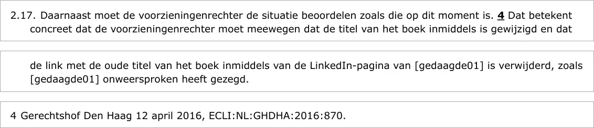

Bewijsstuk · Uitspraak
Rechtbank Rotterdam, vonnis van 6 maart 2024 (ECLI:NL:RBROT:2024:1770)
De passage
“2.17. Daarnaast moet de voorzieningenrechter de situatie beoordelen zoals die op dit moment is.4 Dat betekent concreet dat de voorzieningenrechter moet meewegen dat de titel van het boek inmiddels is gewijzigd en dat de link met de oude titel van het boek inmiddels van de LinkedIn-pagina van [gedaagde01] is verwijderd, zoals [gedaagde01] onweersproken heeft gezegd.”
Voetnoot 4: “Gerechtshof Den Haag 12 april 2016, ECLI:NL:GHDHA:2016:870.”
R.o. 2.17 van het vonnis met voetnoot 4, de voetnoot die het arrest in de zaak-De doofpotgeneraal aanhaalt, zoals de Raad voor de rechtspraak het vonnis publiceert op deeplink.

Waarom dit document telt
Deze uitspraak laat zien dat andere rechters het arrest van 12 april 2016 in de zaak-De doofpotgeneraal sindsdien aanhalen. In een kort geding dat president Chan Santokhi van Suriname in 2024 aanspande tegen een boek over corruptie in regeringskringen, haalde de Rechtbank Rotterdam het arrest aan voor de regel dat de voorzieningenrechter de situatie beoordeelt zoals die op dat moment is. Zij wees de eisen van Santokhi af. De Rechtbank Amsterdam haalde hetzelfde arrest in 2025 aan voor de redactionele vrijheid van de media om hun publicaties zelf in te kleden (ECLI:NL:RBAMS:2025:4459).
Herkomst
- Document
- Vonnis in kort geding, in het openbaar uitgesproken
- Instantie
- Rechtbank Rotterdam, team handel en haven
- Zaaknummer
- C/10/673312 / KG ZA 24-110
- ECLI
- ECLI:NL:RBROT:2024:1770
- Datum
- 6 maart 2024
- Partijen
- De president van de Republiek Suriname, Chan Santokhi (naam volgens de berichtgeving van 6 en 7 maart 2024), in privé en in zijn hoedanigheid van president, eiser, tegen de schrijver en de uitgever van het boek, gedaagden (in de gepubliceerde versie geanonimiseerd)
- Boek
- Corruptie op het hoogste niveau. Zakendoen in Suriname; de uitspraak anonimiseert de titel, die komt uit de berichtgeving van 6 en 7 maart 2024 (Waterkant, Dagblad Suriname)
- Uitkomst
- De eisen worden afgewezen; de president wordt in de proceskosten veroordeeld
- Haalt aan
- Gerechtshof Den Haag 12 april 2016, ECLI:NL:GHDHA:2016:870 (voetnoot 4)
- Zie ook
- Rechtbank Amsterdam 28 mei 2025, ECLI:NL:RBAMS:2025:4459, die hetzelfde arrest aanhaalt (r.o. 4.11, over redactionele vrijheid)Gerechtshof Den Haag, arrest van 12 april 2016 (ECLI:NL:GHDHA:2016:870)Dagblad Suriname over censuur, 13 februari 2024
Aangehaald in: het essay ‘Het verbod viel, het boek bleef overeind’ in het hoofdstuk (1) ‘Een uniek precedent’.
Bewijsstukpagina: https://
Document: https://
Geraadpleegd 3 oktober 2026.

Deze pagina is een bewijsstuk bij het boek De doofpotgeneraal van Edwin Giltay en de bijbehorende website.